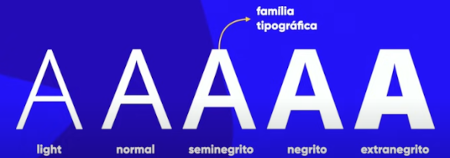
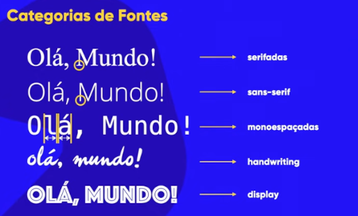

Font-family
Para uma melhor compreensão do que vem a ser fonte, é necessário entender que clifo é uma letra do alfabeto, portanto cada letra do alfabeto é um clifo. Sendo assim um conjunto de clifos recebe o nome de fonte.
Famílias Tipográficas
Algumas fontes possuem várias formas de representar um mesmo clifo, esses formatos é o que chamamos de famílias tipográficas. Exemplo:

Vale a pena ressaltar que nem todas as fontes possuem grandes quantidades de variações, algumas possuem apenas as formas: normal e negrito. Considerando essas variações de algumas fontes para outras, ou melhor, de algumas famílias tipográficas para outras, todas elas são distribuidas em categorias, observe o exemplo:

↑ Voltar para o menu principal; ←Voltar para a página anterior.